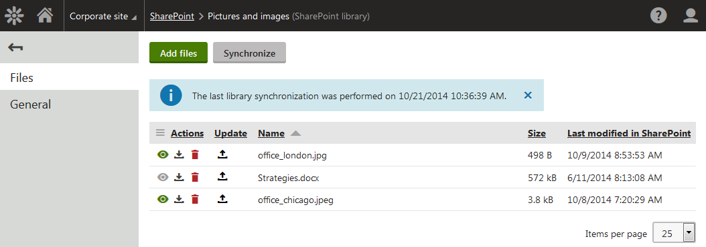

Working with files from SharePoint libraries
The SharePoint application allows you to manage files contained in available SharePoint libraries. Using this application, you can:

Files available in a SharePoint library
In the SharePoint application, you can work with files that are:
allowed in SharePoint
- AND -allowed in Kentico, as specified in Settings -> System -> Files.
Working with locked or checked-out files, same as with files under a workflow is not supported.
Accessing files from SharePoint libraries
You can access files from SharePoint libraries in Kentico after the system finishes downloading content of these libraries from SharePoint. For each SharePoint library, the download of the contained files to Kentico starts when you add the library to the SharePoint application.
Later on, the system periodically checks if changes have been made to the libraries in SharePoint and reflects these changes in Kentico.
You can change the period when the system automatically checks the current state of the libraries in SharePoint and reflects the changes in Kentico.
You can also get the system to reflect in Kentico any changes made to the libraries in SharePoint instantly.
See Managing SharePoint libraries for more details.
When the system finishes downloading the files from SharePoint, you can download any of the files to your computer or mobile device. Besides, you can view images (if available).
Viewing images
To view images from available SharePoint libraries:
Open the SharePoint application.
Edit (
 ) a library.
) a library.The system opens the library on the Files tab and displays available files.
Click View (
 ) next to a selected image to view the image.
) next to a selected image to view the image.The action is available only for image files.
The system displays the image.
Downloading files
To download files from available SharePoint libraries to your computer or mobile device:
Open the SharePoint application.
Edit (
) a library.The system opens the library on the Files tab and displays available files.
Click Download ( ) next to a selected file to download the file to your computer or mobile device.
If you now modify the file, you can replace its existing version with the current version in the library.
Inserting files into SharePoint libraries
To insert files into a selected SharePoint library using the Kentico administration interface:
Open the SharePoint application.
Edit (
) a library.The system opens the library on the Files tab, showing a list of all available files.
Click Add files.
This opens a standard file selection dialog.
Select one or more files.
You need to select files of supported types, i.e. documents and images.
Selecting files of unsupported types results in a failure during upload of the files.
Click Open.
The system starts uploading the files to SharePoint. When the upload to SharePoint is finished, the files are available in the library in both SharePoint and Kentico.
Updating files in SharePoint libraries
To update files in SharePoint libraries:
Open the SharePoint application.
Edit (
) a library.The system opens the library on the Files tab, showing a list of all available files.
Click Update (
 ) next to a selected file.
) next to a selected file.This opens a standard file selection dialog.
Select the current version of the file, or a different file.
Click OK.
The system starts uploading the selected file to SharePoint. When the upload to SharePoint is finished, the file is available in the library in both SharePoint and Kentico.
Deleting files from SharePoint libraries
To delete a file from a selected SharePoint library using the Kentico administration interface:
Open the SharePoint application.
Edit (
) a library.The system opens the library on the Files tab, showing a list of all available files.
Click Delete (
 ) next to a selected file.
) next to a selected file.This opens a confirmation dialog.
Click OK.
The system deletes the file from the library in both Kentico and SharePoint, where it is moved to the recycle bin. This means you can later restore the file in SharePoint.
If you restore the file from the recycle bin in SharePoint, it is instantly available in SharePoint. However, in Kentico it is available only after synchronization with SharePoint, i.e. with delay.
Displaying SharePoint files on your website
To learn how to use files from SharePoint libraries on the pages of your website (for example display images, file download links, etc.), see Displaying SharePoint data in Kentico.